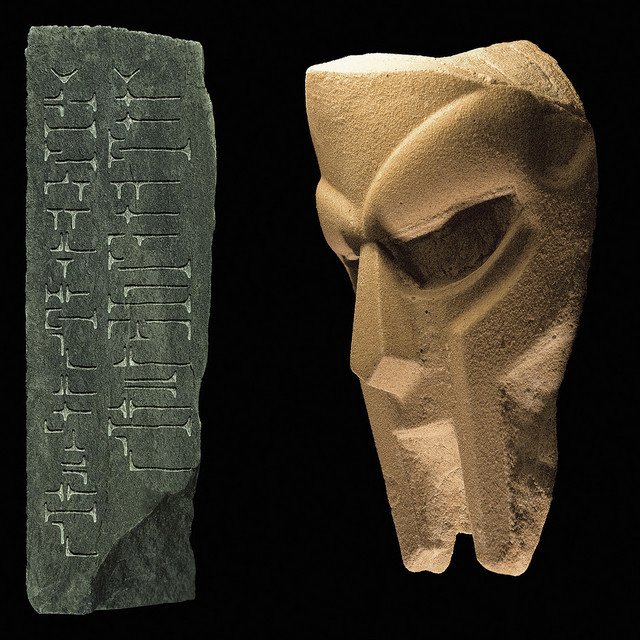

ALBUM FILE // 004
Born Like This
DOOM - 2009
Released in March 2009 under Lex Records, Born Like This is the darkest, most rugged solo record in the Supervillain's catalog. Taking its title from Charles Bukowski’s cynical poem "Dinosauria, We," the album ditches the playful Saturday-morning cartoon energy of his earlier work for a gritty, industrial portrait of a ruined world.
Release Year
2009
Genre
Dystopian Underground Hip-Hop
Sound
Industrial synths, apocalyptic boom-bap, unreleased J Dilla beats, and gravelly, cold-blooded syllable math.
BACKGROUND
Apocalypse In The Underground
By 2009, Dumile dropped the "MF" prefix entirely, releasing the album simply under the name DOOM. Operating heavily out of London, he crafted a record that felt intensely isolated, cynical, and uncompromisingly anti-establishment. The supervillain was no longer just robbing banks; he was watching the whole empire burn down.
The album serves as a massive underground summit, featuring vocal appearances from Wu-Tang Clan legends Raekwon and Ghostface Killah. Most importantly, it features DOOM rapping over staggering, unreleased beats from the late, legendary producer J Dilla, uniting two of hip-hop's greatest avant-garde minds on the same tracklist.
STANDOUT TRACKS
Apocalyptic Anthems
- Gazzillion Ear - A relentless opening track where DOOM raps over two different J Dilla beats, executing a mid-song beat switch that remains one of the hardest moments in his entire discography.
- That's That - Built over a weeping, dramatic violin sample, this is arguably DOOM's greatest pure technical lyrical exercise, packing an impossible dense maze of internal multisyllabic rhymes into two minutes.
- Cellz - Opens with a chilling, two-minute live recording of author Charles Bukowski reciting his apocalyptic poem before dropping into an earth-shaking, menacing DOOM verse.
- Angelz (feat. Tony Starks) - A legendary, dusty collaboration with Ghostface Killah that served as a massive teaser for their mythical, unreleased collaborative album, DOOMSTARKS.
Why This Album Matters
Born Like This proved that DOOM wasn't just a nostalgic throwback to '90s sample culture. It showed he could adapt his complex penmanship to industrial, aggressive, and modern sounds without losing an ounce of his identity. It stands as his final major mainline solo studio album—the ultimate, uncompromising parting gift from the villain.